Generally, any process comprises a number of steps, which lead towards the overall goal. Workflow process consists of a number of workflow activities. The workflow activity is a piece of work that will be done by combination of resources and computer applications.
Table 4.18. Activities attributes
| Name | M/O | Description |
|---|---|---|
| Activity Name | O | Text used to identify process activity. |
| Performer | O | Link to entity workflow participant. May be an expression. Default: Any Participant. |
| Start mode | O | Describes how the execution of an Activity is triggered. |
| Finish mode | O | Describes how the system operates at the end of the Activity. |
| Deadline | O | Specification of a deadline and action to be taken if it is reached. |
| Priority | O | A value that describes the initial priority of this activity when the execution starts. If this attribute is not defined but a priority is defined in the Process definition then that is used. By default it is assumed that the priority levels are the natural numbers starting with zero, and that the higher the value the higher the priority (i.e.: 0, 1, ...). |
| Limit | O | Expected duration for time management purposes (e.g. starting an escalation procedure etc.) in units of DurationUnit. It is counted from the starting date/time of the Process. The consequences of reaching the limit value are not defined in this document (i.e. vendor specific). |
| Icon | O | Address (path- and filename) for an icon to represent the activity. |
| Documentation | O | The address (e.g. path - and filename) for a help file or a description file of the activity. |
| Description | O | Textual description of the activity. |
Activities are associated with their performers (which are workflow participants), and application assignments. Optional information about activity may be associated with: starting and stopping manner, usage of specific workflow relevant data, preconditions for starting and postconditions for finishing the activity.
The following diagram illustrates the generic structure of activities:
Activities and other activity-like objects are inserted using buttons on graph's "Toolbox" toolbar.
Although it is possible to create a new activity through the property panels, the usual way to do it is through the graph component.
The following table shows the picture of how the graph represents a certain XPDL activity type, and short description of each type of the activity:
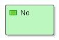 | Manual (No implementation) activities are atomic (Generic Activities). They are the smallest units of work, although even this activity may produce more than one work item for its performer. |
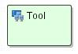 | Tool activities are atomic (Generic Activity). They are the smallest units of work, although even this activity may invoke more than one application. |
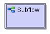 | Subflow is another activity type. It implements a whole new workflow process. Process definition within the subflow is entirely independent from the first one (where subflow activity resides). It has its own set of activities, internal transitions, participants, application definitions and other workflow relevant data. |
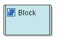 | An activity may be a block activity that executes an activity set , or map of activities and transitions. Activities and transitions within an activity set share the name space of the containing process. |
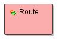 | Dummy (route) activity does nothing on its own. This type of activities is used for synchronization and constructing complex and sophisticated transitional conditions - e.g. activity pre- and post- conditions. |
Icons for inserting different types of activities from the graph
toolbox are the same as the ones included in the previously explained
picture of the activities in the graph. For the manual activity, there
is a toolbox icon  , for Tool activities
, for Tool activities  , for subflow activities
, for subflow activities , for block activities
, for block activities  and for route activities
and for route activities  . Once selected, mouse cursor will show what
type of object you'll insert. Activity is created using some default
values for their properties, which typically are to be changed. Right
clicking the object in the graph shows a context menu, and there is
item representing action for getting property panel. Different than
others, Block and SubFlow activities have additional menu item
"descend into..." which is used to display the graph of the referenced
ActivitySet/Workflow Process.
. Once selected, mouse cursor will show what
type of object you'll insert. Activity is created using some default
values for their properties, which typically are to be changed. Right
clicking the object in the graph shows a context menu, and there is
item representing action for getting property panel. Different than
others, Block and SubFlow activities have additional menu item
"descend into..." which is used to display the graph of the referenced
ActivitySet/Workflow Process.
Beside this, TWE offers a special feature to select an Icon for particular activity. When you open activity's property panel, for the Icon entry you can select some of the additional Icons we offer (this list can be easily extended by putting more icons in tweactivityicons.jar file). The selected icon will appear instead the default one.
Start and End Bubbles
These are the special graphical objects which are the part of the Graph component.
Graph's toolbox icon for inserting Start object into graph is
and for inserting End object into Graph is

When these objects are inserted, they are similarly presented in the graph::
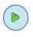 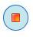
Although start and end bubbles aren't part of XPDL specification, there is a need to visually mark where the workflow process starts, and where it ends. Each of Start/End markers is can be connected to exactly one activity in the graph.
User can configure TWE not to use start/end bubbles, in which case starting and ending activities of the process are colored in special colors, also configured in the property file of the graph component (starting activities are considered the ones without incoming transitions or with only one incoming transition, which is also a circular transition. The similar stands for the ending activities).
In this section are explained various property panels concerning different types of activities: activities without implementation (manual), sub-flow, route, tool and block activities. All information are organized in several tabs: general, type, transition restriction, simulation information, and extended attributes.
General tab - displays general activity data
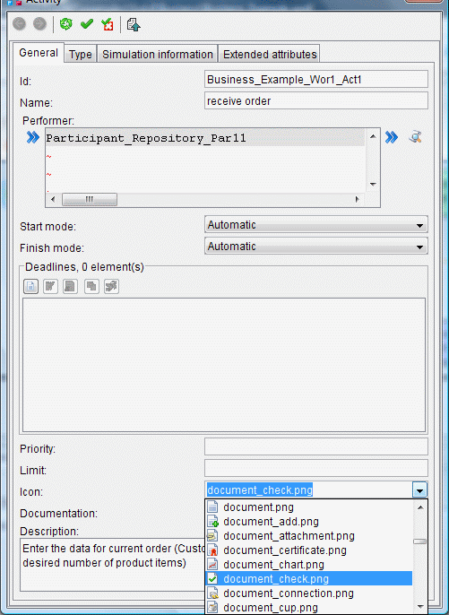 Tab has tree parts. First part contains activity id, name, performer (can be a reference to a participant or an expression), start mode (can be automatic or manual) and finish mode (can be automatic or manual).
Second part shows all deadlines and also offers toolbar buttons with options to handle list of deadlines.
Third part contains priority (describes initial priority for activity), limit (expected duration - for time management purposes), icon (reference to the icon representing this activity), documentation (reference to an external document) and description.
Fields icon and documentation have drop down list to select one of the offered icons. If selected, this icon will replace the original one representing this activity within the graph.
(the list of available icons can be extended by putting additional icons within the tweactivityicons.jar file)
Type tab
This tab contains some specific data concerning the particular type of an activity. For activities without implementation (manual)
and route activities, this tab doesn't contain any
specific data.Block activity type property panel contains information about block id, which is a reference to defined ActivitySet (re-usable block of activities and transitions which shares the context of the workflow process where defined).
A block activity
executes referenced ActivitySet or
self-contained activities/transitions map. When block
activity is being executed, the execution proceeds to the
first activity within the ActivitySet it references, and
continues within the set until it reaches ActivitySet's
exit activity (an activity with no output transitions).
Execution then returns to follow the output transitions of
the block activity.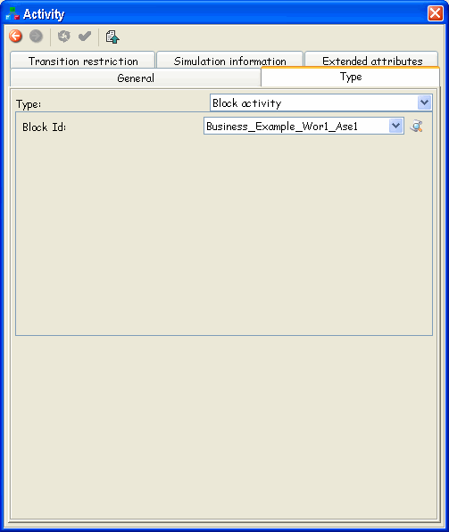 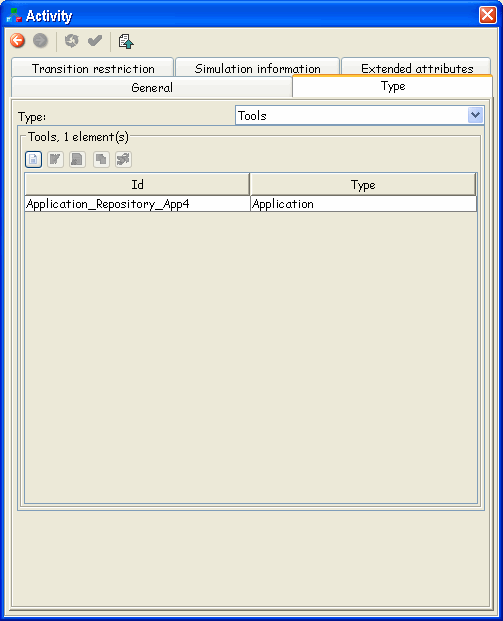 Tool activity property panel enables definition of Tools (which are the references to the applications) required for enactment engine to run, in order to perform the activity.
Basically, this tab shows all the tools defined for this kind of activity.
Subflow
is type of activity whose
implementation is another workflow
process.Firstly, attribute id should be set. Id defines workflow process that will be executed. In TWE you are setting this attribute by picking the one of the WorkflowProcesses defined within the combo box. Beside the combo, you have a shortcut to display the properties of the WorkflowProcess selected within the combo.
Then, execution (mode) attribute should be set. Synchronous execution mode suspends execution of calling process until sub-flow is finished. Asynchronous mode, spawns a new thread of execution for sub-flow process, which is then executed at its own pace, independently from calling workflow process.
While entering actual parameters that will be passed to subflow process, TWE shows the list of corresponding formal parameters of the referenced sub-process.
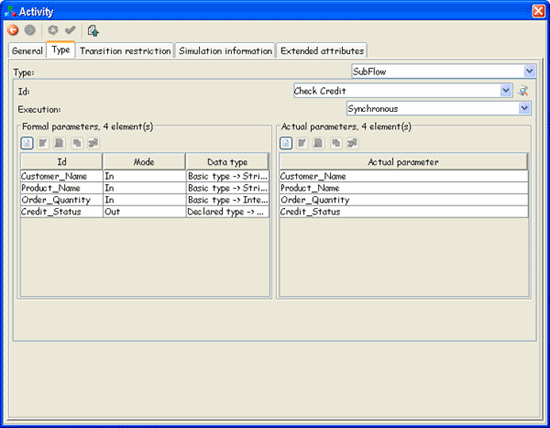 Transition Restriction tab
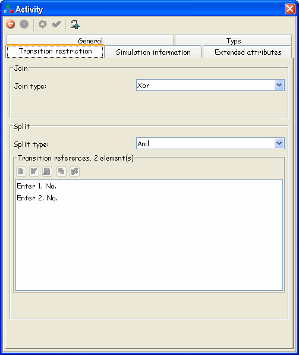 Tab has two parts. First part defines joining method for incoming transitions. It can be either XOR or AND, which defines whether any incoming transition may start the activity, or all of them must be completed.
Second part defines split type for outgoing transitions. It can be either XOR or AND, which defines whether only one of the outgoing transitions will be started (the first one which condition evaluates to true), or all of them.
When an activity has XOR split, the order of calculating outgoing transition conditions is important. This order is determined in XPDL by the order of TransitionRef elements within its TransitionRefs collection. From here, you can also control that order. The way of doing it is to simply change positions of the target activities (the activities that outgoing transitions are leading to) within the given list.
Simulation Information tab
Here are defined various information about simulation: whether the activity is instantiated once or multiple times, cost, waiting and working times and duration.
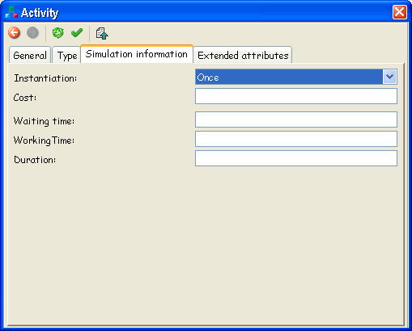 Extended Attributes tab
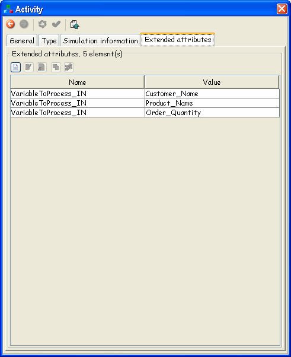 It contains information about all extended attributes of the selected activity in form a of a table and operations for their managing. Every table row (extended attribute) is described with name and value.